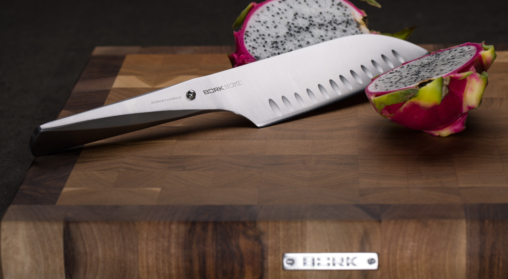
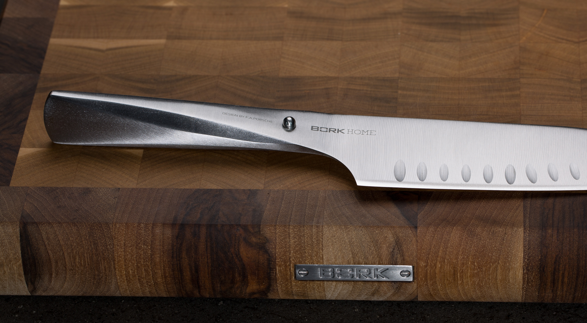
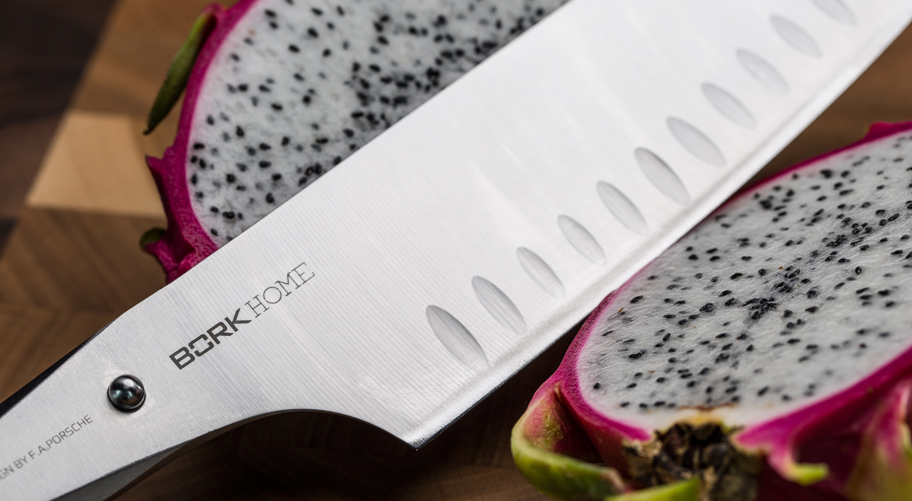

Нож сантоку BORK HN502
Сантоку - это универсальный японский поварской нож, название которого переводится как «три вида использования», т.е. с его помощью можно:
- резать
- крошить
- рубить
Конструкция ножа специально продумана и выполнена таким образом, чтобы идеально и быстро справиться с любой из перечисленных трех задач, при этом, руки повара не устанут.
Размер сантоку удобен для резки мелкими ломтиками или кубиками как мяса, так и овощей.
Отличительная особенность данного ножа в том, что он оснащен очень широким и тяжелым лезвием. Такая конструкция обеспечивает смещение центра тяжести ножа вперед, при этом нож отлично сбалансирован, и им можно с легкостью совершать любые манипуляции.
Клинок у данного вида японских ножей не предусмотрен для разрезания (разрубки) толстых костей и различных твердых материалов, которые могут привести к повреждению кромки лезвия.
На лезвии предусмотрены выемки ("грантоны"), исключающие прилипание продуктов.
Нож сантоку длиной 18 см. создан без единого шва для гарантии гигиеничного и максимально комфортного использования.
Благодаря специальному способу затачивания изделие дольше остается острым.
Нож сантоку BORK HN502 полностью изготовлен из японской высококачественной нержавеющей стали AISI 301.
Дизайн ножа выполнен студией Porsche Design.
Серия ножей была разработана вместе с топ-шеф- поварами из разных стран. Дизайн ножа основан на методах работы профессиональных поваров, которые часто используют свои ножи под разными углами резки.
Ручка и лезвие полностью сливаются друг с другом, образуя единое целое. Только шарик из нержавеющей стали сигнализирует о разделении, а также является упором для указательного и большого пальцев.
Необычный дизайн в сочетании с продуманной эргономикой делает ножи BORK уникальным дополнением вашей кухни и признанным инструментом более чем 200 шеф-поваров Германии.